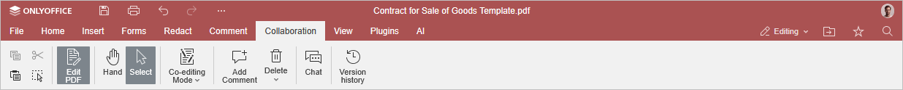

Collaboration tab
The Collaboration tab in the PDF Editor allows accessing the collaboration features for .pdf files.
The corresponding window of the Online PDF Editor:

The corresponding window of the Desktop PDF Editor:

Using this tab, you can:
- switch between the Strict and Fast co-editing modes,
- add or remove comments to the .pdf,
- open the Chat panel,
- track the version history.